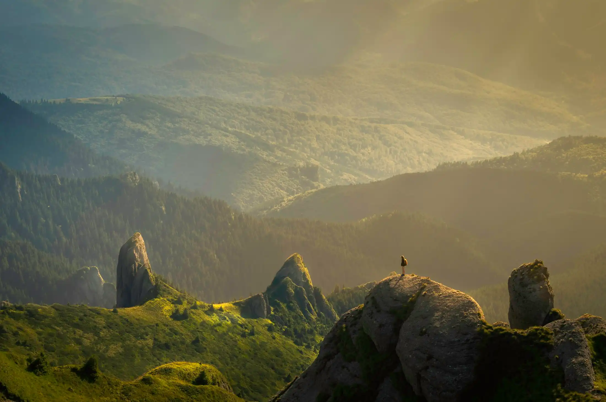
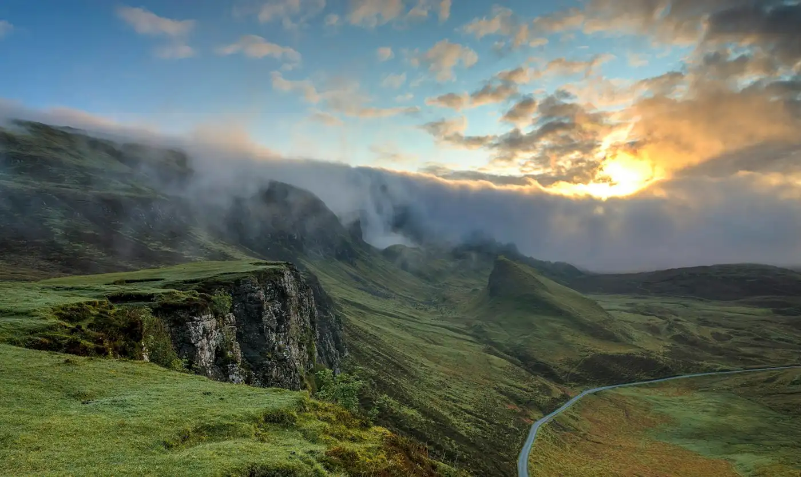
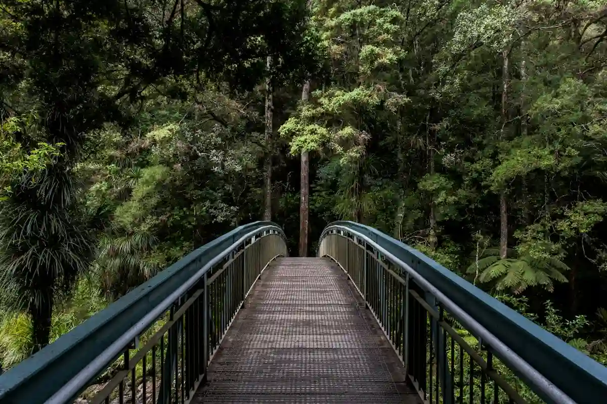
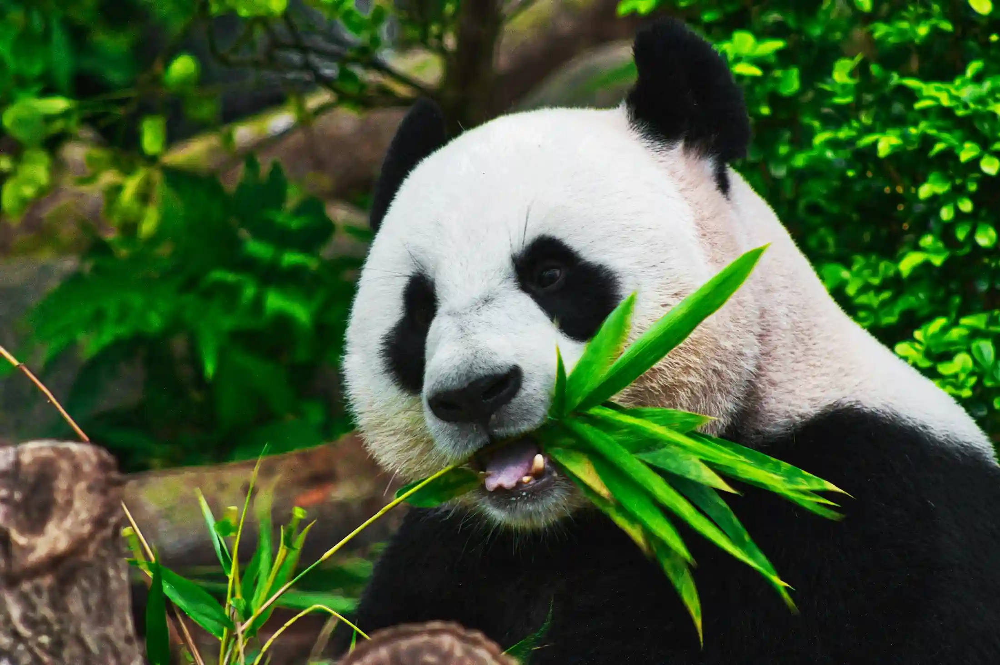
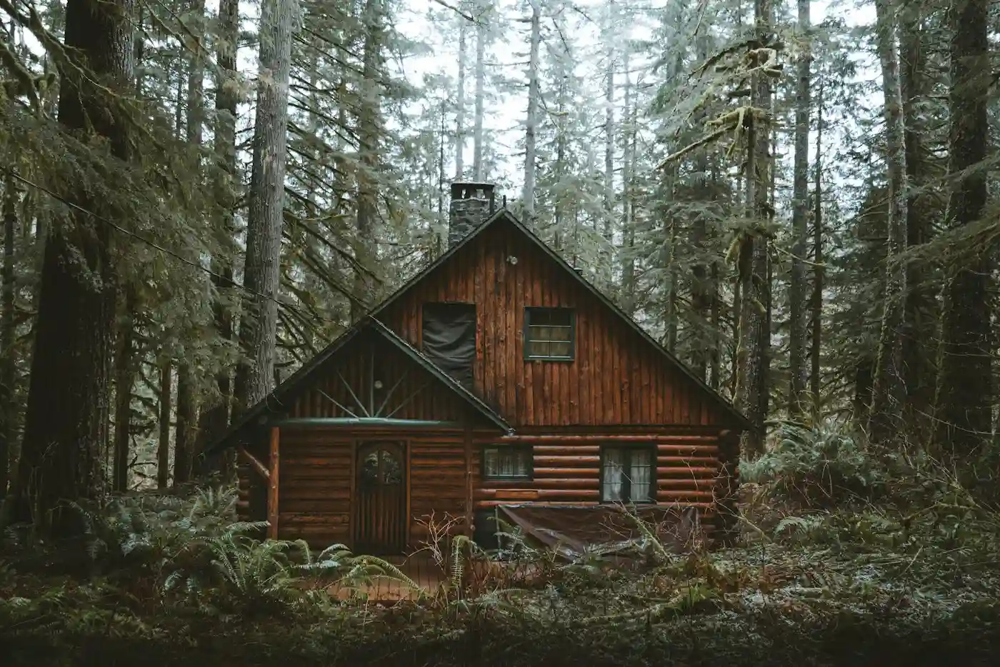
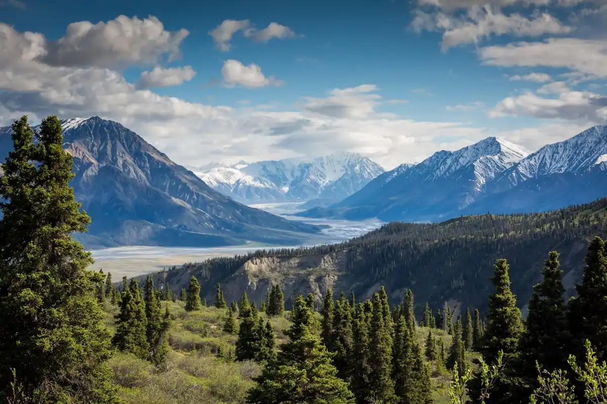
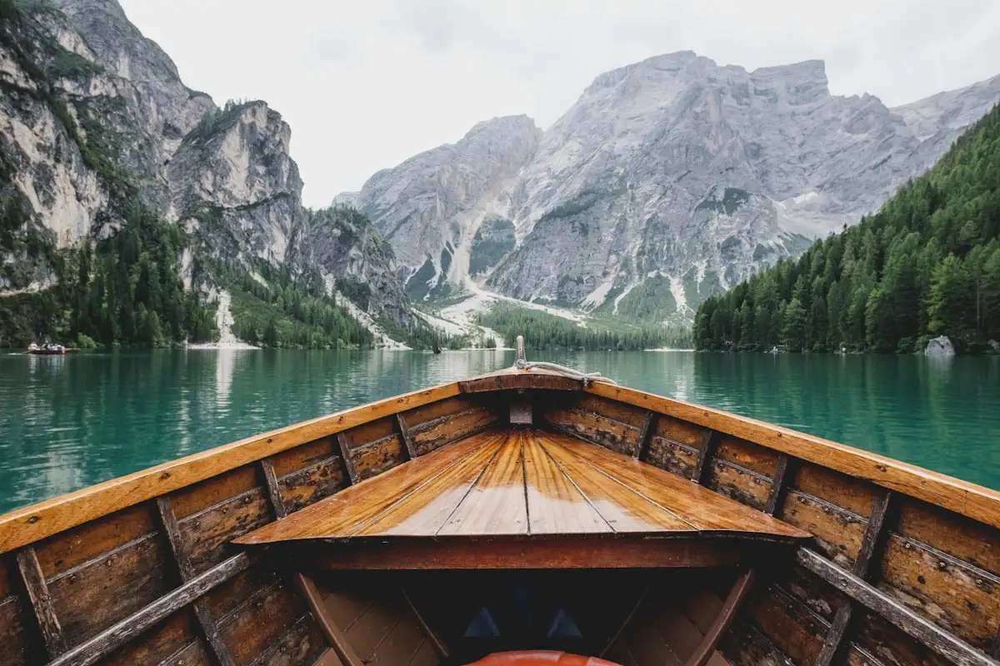
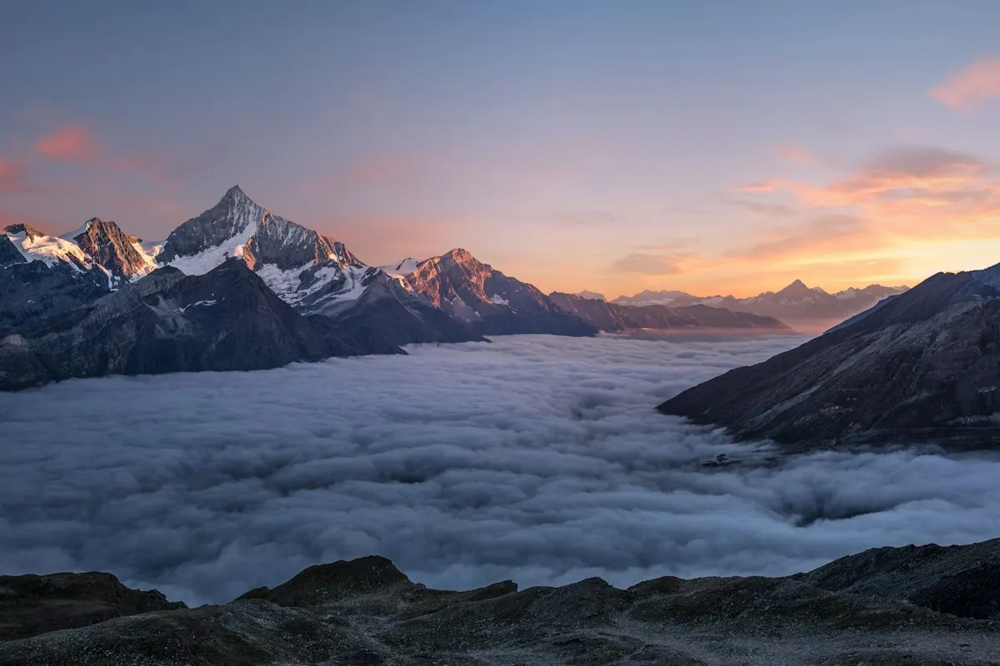
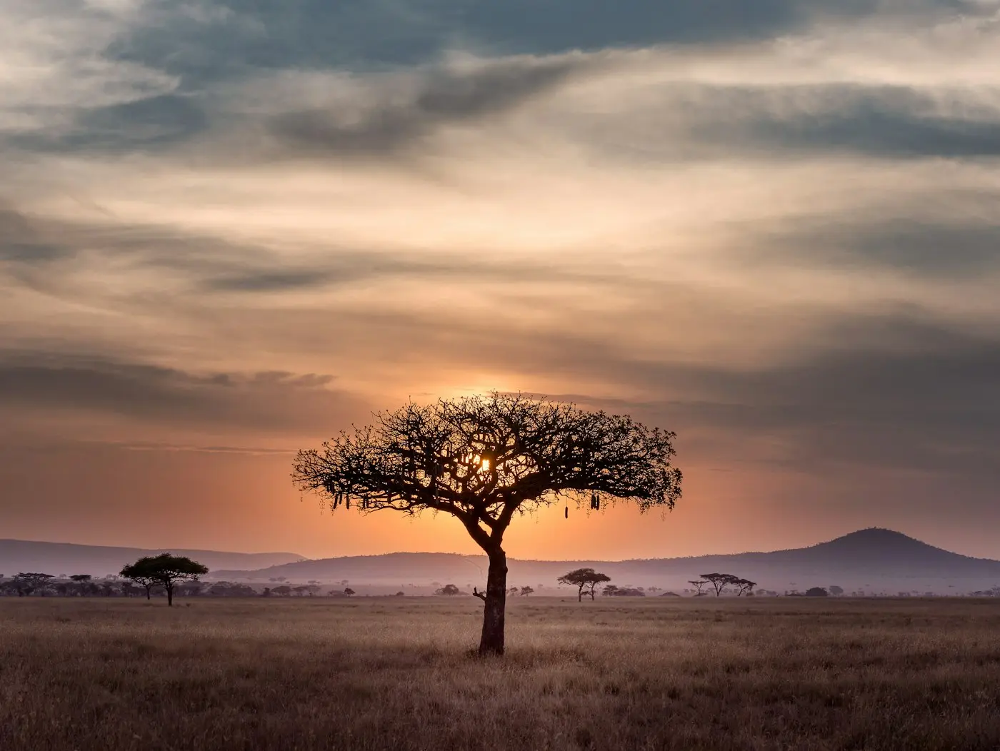
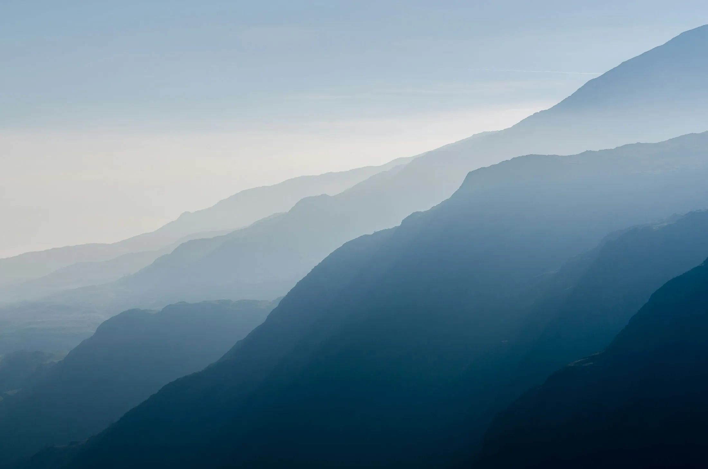

Forest Cabins
Timber structures raised on stilts to leave the ground beneath them undisturbed.

Eco Tourism · Responsible Travel
Lower-impact journeys through forests, mountains, rivers and the communities that keep them. Smaller groups, local guides, and time enough to actually notice where you are.
The Places We Protect
We build journeys around landscapes that can absorb them — forest ridges, wetlands, hill slopes and river basins where travel still supports the people who live there.
Every route begins with the same question: what does this place need? That usually means smaller groups, seasonal timing, guides from the region, and stays that are owned and run close to home.
Our philosophy

Destinations Beyond the Map
Less a list of places, more a set of conditions — the right season, the right guide, and the right pace for the ground underfoot.

Wild by Nature
Wildlife travel works best when it stops being a checklist. We travel at the hours animals actually move, keep our distance, and accept that a quiet sighting is worth more than a guaranteed one.
Most departures begin before first light, when the forest is loudest.
We keep to established tracks and respectful viewing distances.
No luring, no calls, no handling — for the animal's sake and yours.
Stay Lightly
Places to stay that are built for the climate they sit in — local materials, modest footprints, and owners who live within walking distance.

Timber structures raised on stilts to leave the ground beneath them undisturbed.
Seasonal camps that pack down completely, leaving no permanent footprint.
Family-run houses in hill villages, where the money stays in the village.
Journeys With Purpose
Walking, paddling, cycling and simply sitting still — the activity matters less than how it's run.

Multi-day walks with local guides, porters paid fairly and loads kept light.

Slow paddles through wetlands and backwaters, timed with the water, not the clock.

Journeys built around stillness — long mornings, few miles, no fixed itinerary.

Local Roots
Guides, cooks, drivers, hosts and artisans — every journey is staffed by people from the region it passes through. It's the simplest way to make sure travel money does more than pass through.
Trained, paid above local market rates, and from the area they walk.
Meals cooked by host families using what the season provides.
Stops with artisans who work in materials native to the region.
Our Conservation Work
No badges, no invented numbers. Just the practices we hold ourselves to, and the ones we're still working on.
Departures are capped so trails, camps and wildlife corridors aren't overloaded.
We move routes away from sensitive areas during breeding and migration windows.
Everything that goes into a camp comes back out with us, food waste included.
Every trip is staffed primarily by people who live in the region.
We publish what we measured and what we couldn't — including what we got wrong.

Travel at Nature's Pace
One-night stops turn places into backdrops. We build in time to settle.
Space in the itinerary for weather, for detours, and for doing nothing.
We'd rather you know one valley properly than five from a window.
Voices From the Journey
Reflections from travellers and guides. Shared with permission; names kept short for privacy.
“I stopped taking photographs by the third day. There was nothing to capture that felt better than just standing there.”
“The group size changes everything. You hear the forest instead of the group.”
“Our host family taught us more in one evening than a week of reading had.”
The Field Journal
Why Travel Responsibly
Not a certification. Just the principles that shape how we plan, who we hire and where we go.
Nothing taken, nothing left, nothing marked. Trails stay trails.
Guides, hosts and suppliers come from the region — and are paid fairly for it.
Group caps that protect the place and improve the experience at the same time.
No baiting, no chasing, no handling. Observation on the animal's terms.
We describe what we do, not what sounds best. Claims stay checkable.
Explore With Intention
Every journey starts with a conversation, not a booking form.